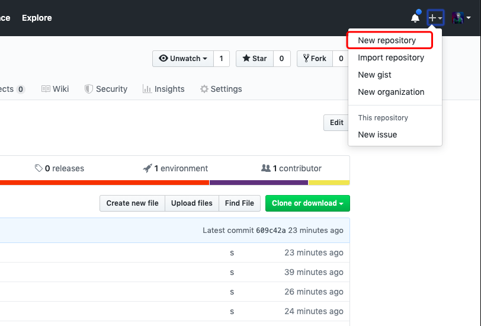
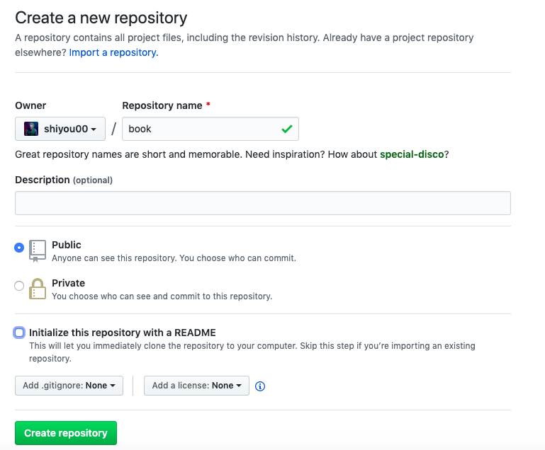
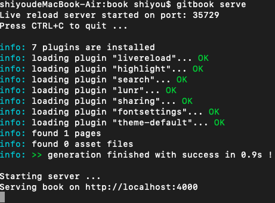
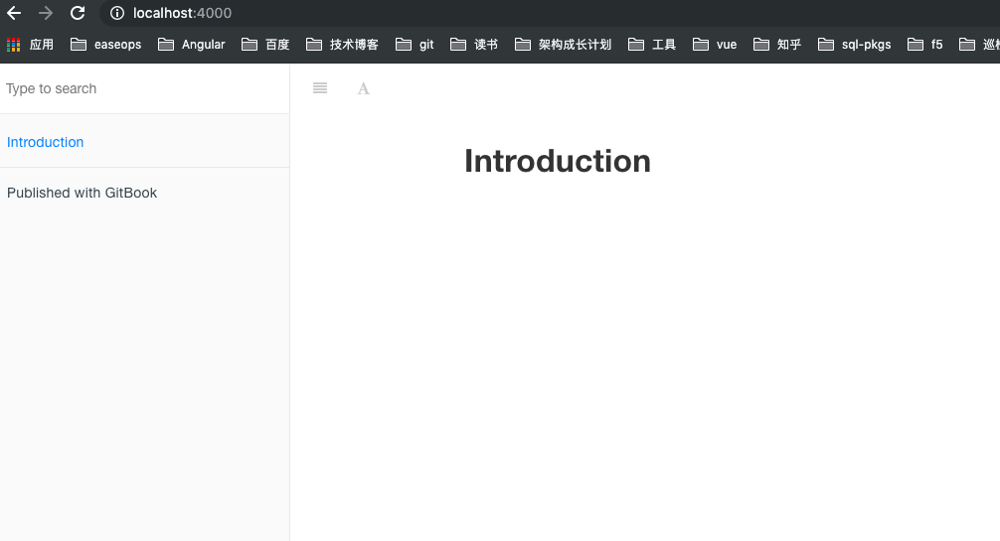
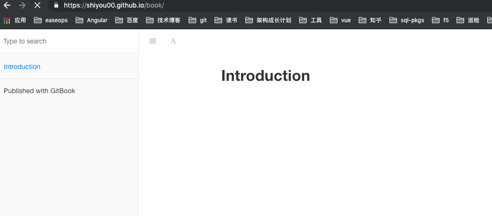

前言
本文主要介绍如何使用 gitbook 并且发布到github pages中
安装
安装前需要自行安装node.js
sudo npm install gitbook -g
使用
1、创建一个git仓库 

2、拉取git仓库
git clone https://github.com/shiyou00/book.git
cd book/
3、初始化gitbook
gitbook init 初始化
gitbook serve 启动服务

4、打开界面
http://localhost:4000

目录结构
$ tree book/
book/
├── README.md
└── SUMMARY.md
0 directories, 2 files
可以看到一个初始化的书籍已经出现了
发布到 github pages
1、推送代码到git仓库
git add .
git commit -m "add pages"
git push
2、安装工具
sudo npm install -g gh-pages
3、执行gitbook build 把书籍打包到_book目录下
4、执行命令gh-pages -d _book
至此就发布成立可以打开相应的链接：
Your site is published at https://shiyou00.github.io/book/

好了已经成功部署到github pages中托管了，以后可以直接线上访问了，非常方便。